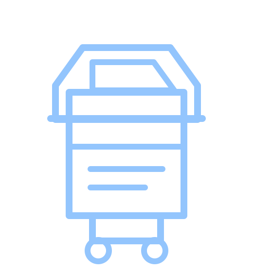
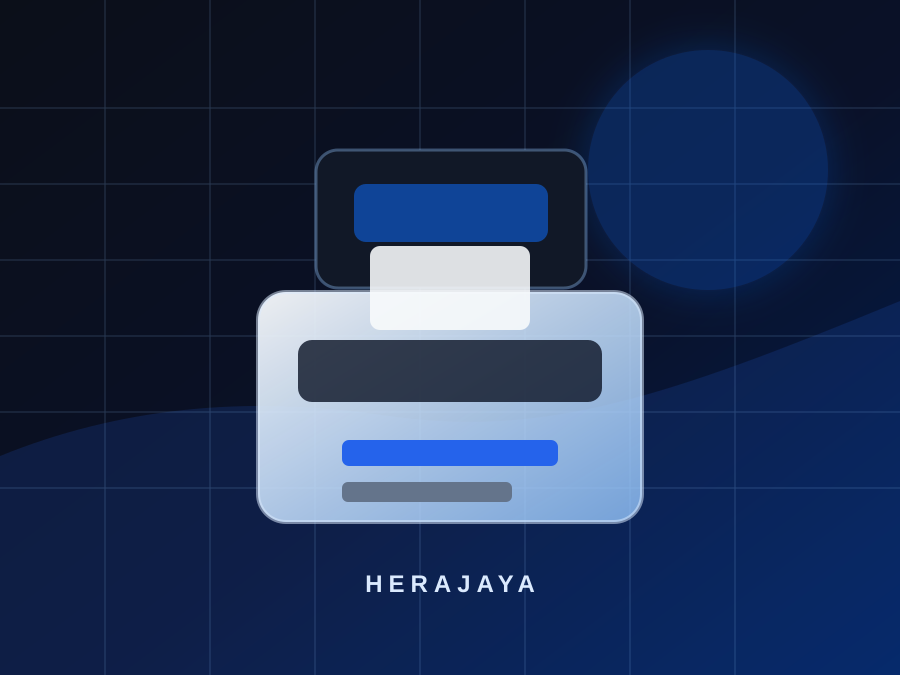
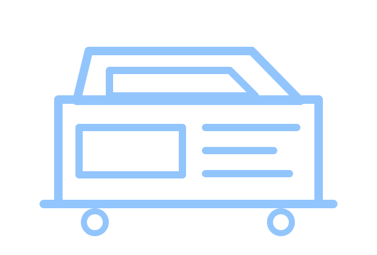

Biaya Lebih Efisien
Pilihan ekonomis untuk kebutuhan print, copy, dan scan tanpa harus langsung membeli unit baru.

Mesin Fotocopy Rekondisi
Herajaya menyediakan pilihan mesin fotocopy bekas, mesin fotocopy rekondisi, dan mesin fotocopy second yang disiapkan untuk kebutuhan kantor, sekolah, usaha, dan fotocopy center.

Second
Pilihan ekonomis
QC
Quality check
Ready
Konsultasi unit

Keunggulan Mesin Bekas
Mesin fotocopy rekondisi cocok untuk bisnis yang membutuhkan unit produktif dengan anggaran lebih efisien.
Pilihan ekonomis untuk kebutuhan print, copy, dan scan tanpa harus langsung membeli unit baru.
Unit rekondisi disiapkan dengan pengecekan fungsi utama sebelum direkomendasikan.
Diarahkan untuk kebutuhan kantor, sekolah, usaha, dan fotocopy center sesuai volume kerja.
Pilihan Produk
Cocok untuk kebutuhan copy dan print dokumen harian dengan volume menengah hingga tinggi.
Tanya UnitPilihan untuk kebutuhan dokumen warna, materi promosi, scan warna, dan pekerjaan kantor modern.
Tanya UnitKonsultasi pemilihan unit second untuk usaha fotocopy dengan mempertimbangkan lokasi dan target volume.
KonsultasiProses Quality Check
Pemeriksaan fisik, panel, fungsi dasar, dan kondisi operasional mesin.
Pengecekan kualitas copy dan print untuk melihat ketajaman serta stabilitas hasil.
Evaluasi komponen seperti roller, drum, blade, developer, dan alur kertas.
Unit direkomendasikan sesuai kebutuhan volume cetak, fitur, dan anggaran.
FAQ
Mesin fotocopy bekas rekondisi adalah unit second yang sudah melalui pengecekan, perawatan, dan persiapan ulang.
Ya. Herajaya menyediakan pilihan mesin fotocopy bekas, rekondisi, dan second untuk berbagai kebutuhan bisnis.
Mesin rekondisi bisa lebih ekonomis dibanding unit baru dan tetap disiapkan untuk kebutuhan operasional.
Bisa cocok jika kapasitas, fitur, dan kondisi unit sesuai dengan kebutuhan volume cetak usaha.
Bisa. Tim Herajaya dapat membantu merekomendasikan unit sesuai kebutuhan, lokasi, dan anggaran.
Sampaikan kebutuhan Anda. Tim Herajaya akan membantu memilih mesin fotocopy bekas atau rekondisi yang paling relevan.